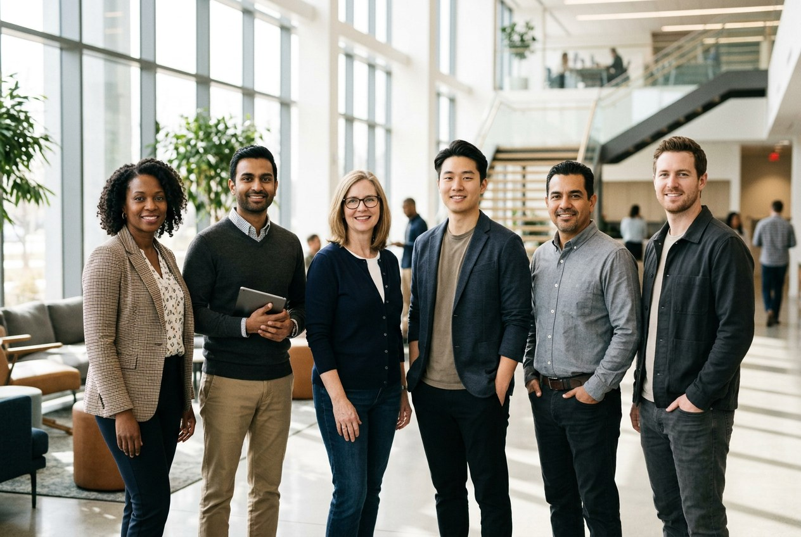
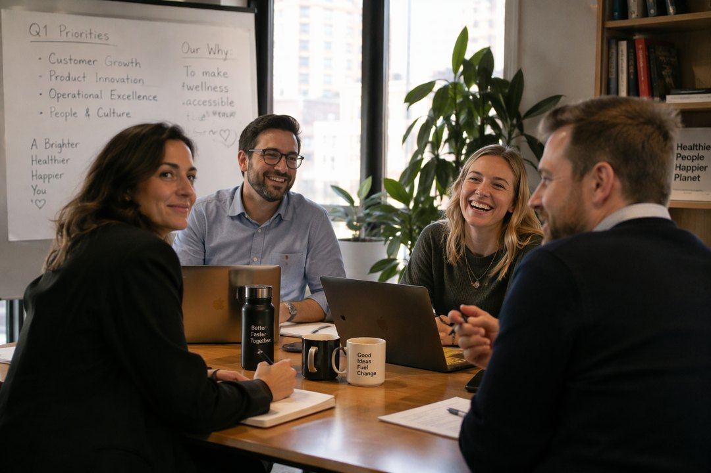
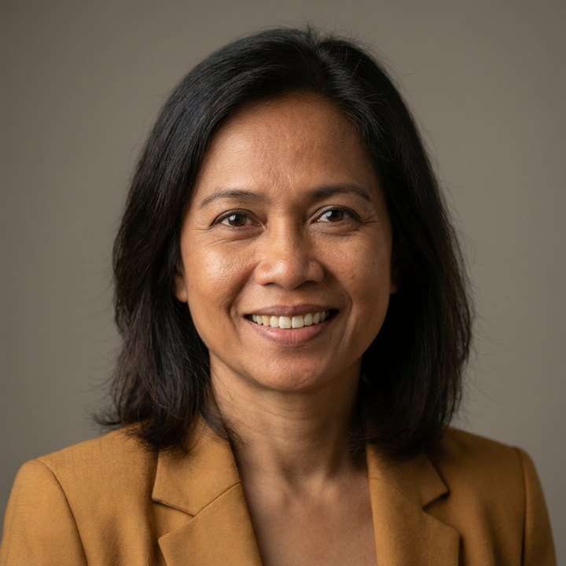

Arsip foto redaksi yang siap disensor sebelum tayang.
Halaman demo ini memuat foto tim, foto rapat, potret tunggal, klip video, kanvas yang bergerak, dan satu gambar lintas-origin. Buka sidebar VeilFace untuk menutup semua wajah secara lokal — tanpa mengunggah apa pun.
6media
12+wajah
0unggah
Foto liputan



Klip video
chrome://extensions → Load unpacked, lalu tekan
Alt+Shift+F di halaman ini. Sidebar muncul selebar 1/4 layar dengan delapan tab vertikal.
Semua deteksi berjalan di perangkatmu memakai model yang dibundel bersama ekstensi; halaman ini tidak
mengirim permintaan jaringan apa pun selain memuat asetnya sendiri.